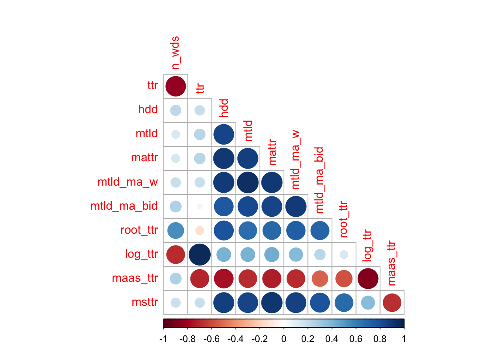

Students measure the amount of multicollinearity among explanatory variables.
ELC L2 English Written Corpus
Lexical diversity has been shown to positively correlate with L2 proficiency. That is, as L2 learners become more proficient, they use more unique words. Put the other way around, they repeat the same words less often. The lex_div_ELC.csv file in the CMS contains 4k+ observations of texts written by L2 English writers in BYU’s English Language Center (ELC). At the end of each semester, ELC students write a response to a 10-minute prompt and another response to a 30-minute prompt, and those two responses are rated by human readers. After Rasch Analysis, the FairAverage score is created. That FairAverage score is a measure of the students’ proficiency.
Kelly Woods (while an MA Linguistics student here), Brett Hashimoto, and I (or is it: “me, Kelly and Brett”?) used this corpus to study the effect of lexical diversity on the FairAverage scores as well as to study the multicollinearity of the many lexical diversity measures that have been created since the early 20th century (see paper). We used Variance Inflation Factors and Principal Component Analysis during the process of analyzing the multicollinearity of the lexical diversity measures. So, we know that there is lots of multicollinearity between these measures, and so it’s a great dataset to explore the negative effects of multicollinearity on regression results.
Prep the data
Download the CSV file from the CMS and update the working directory for your computer.
library("tidyverse")
── Attaching core tidyverse packages ──────────────────────── tidyverse 2.0.0 ──
✔ dplyr 1.1.4 ✔ readr 2.1.5
✔ forcats 1.0.0 ✔ stringr 1.5.1
✔ ggplot2 3.5.1 ✔ tibble 3.2.1
✔ lubridate 1.9.3 ✔ tidyr 1.3.1
✔ purrr 1.0.2
── Conflicts ────────────────────────────────────────── tidyverse_conflicts() ──
✖ dplyr::filter() masks stats::filter()
✖ dplyr::lag() masks stats::lag()
ℹ Use the conflicted package (<http://conflicted.r-lib.org/>) to force all conflicts to become errors
Rows: 4207 Columns: 25
── Column specification ────────────────────────────────────────────────────────
Delimiter: ","
chr (10): id, sem, test_type, timing, sem_yr, Sex, L1, country, L1_clean, L1...
dbl (15): yr, n_wds, ttr, hdd, mtld, mattr, mtld_ma_w, mtld_ma_bid, root_ttr...
ℹ Use `spec()` to retrieve the full column specification for this data.
ℹ Specify the column types or set `show_col_types = FALSE` to quiet this message.
head(ld)
# A tibble: 6 × 25
id yr sem test_type timing n_wds ttr hdd mtld mattr mtld_ma_w
<chr> <dbl> <chr> <chr> <chr> <dbl> <dbl> <dbl> <dbl> <dbl> <dbl>
1 000305437 2020 Fall LAT 10 mi… 130 0.5 0.723 43.3 0.717 40.5
2 000305437 2020 Fall LAT 30 mi… 384 0.353 0.773 51.4 0.722 51.0
3 000305437 2020 Fall Placement 10 mi… 147 0.707 0.864 108. 0.817 120.
4 000305437 2020 Fall Placement 30 mi… 362 0.426 0.775 57.7 0.766 62.0
5 000346838 2018 Fall LAT 10 mi… 141 0.507 0.708 40.8 0.656 38.8
6 000346838 2018 Fall LAT 30 mi… 443 0.256 0.685 41.4 0.672 39.1
# ℹ 14 more variables: mtld_ma_bid <dbl>, root_ttr <dbl>, log_ttr <dbl>,
# maas_ttr <dbl>, msttr <dbl>, sem_yr <chr>, Age <dbl>, Sex <chr>, L1 <chr>,
# FairAverage <dbl>, FitStat <dbl>, country <chr>, L1_clean <chr>,
# L1_final <chr>
Draw some scatterplots
Draw scatterplots of FairAverage by the predictor variables that are selected as significant in the linear regression below. The lexical diversity measurements were obtained with the lexical_diversity Python module.
FairAverage is the response (aka. dependent or outcome) variable, and a bunch of lexical diversity measures (as well as text length as number of words) are explanatory (aka. independent or predictor) variables.
Question: How do the signs (i.e., positive or negative) of the coefficient estimates compare with the sign of the slopes of the regression lines in the scatterplots above?
corrplot::corrplot(correlations, type ="lower", diag =FALSE)

Enter VIFs
Variance Inflation Factors (VIFs) report how much multicollinearity there is associated with each explanatory variable in a regression model. In other words, “these measure the degree to which one predictor can be accounted for by the other predictors” (Winter 2020, p. 114). There are different rules of thumbs about the threshold above which a VIF should not exceed. See p. 160 of Levshina (2015) here and p. 114 of Winter (2020) here. The car R package has a vif() function to get VIFs. (There are other packages that have functions to get VIFs, for example, regclass::VIF() and olsrr::ols_vif_tol().)
Question: How do the VIF scores in our linear regression compare to the proposed thresholds mentioned by Levshina and Winter?
Through trial and error, choose predictor variables to remove in order to reduce the VIFs. Refit a linear regression each time you remove a predictor and compare the (adjusted) R2 values of new models with the original model (the bigger, the better) and AIC scores (the lower, the better), and also get new VIF scores.